By Vsevolod Stebliuk (translated from Ukrainian)

…somewhere in the midst of the eternal Carpathians…
It has been 3 months since we launched the pilot project of family rehabilitation for veterans of the Russian-Ukrainian war. With the help of donors and charitable organization United Help Ukraine, the second group of veterans was able to come for rehabilitation in the Carpathian Mountains.
And once again in the midst of the eternal Carpathians, at the foot of the legendary Hoverla mountain, at the altitude of 1300 meters above the sea level, in the training center Zaroslyak, a new group of veterans and their families came to take a short but effective course of psychological and physical rehabilitation.
This course is designed as rehabilitation for the entire family. They came here to be with the family, to spend time with their loved ones. There are no mobile phones, no internet connection, no television.
Only your family and your friends. And breathtaking Carpathian Mountains…

The Alpine sports training base Zaroslyak
The Alpine sports training base Zaroslyak is a unique facility that is designed specifically for training athletes who are members of the National teams in various sports.
It includes the gymnasium and sports halls, rooms for psychological training, sauna with a small swimming pool, comfortable rooms for guests and the superb quality nutritional meal course of class “Sports.”
But most important of all is hospitality of people there and their desire to help veterans. We thank Oleg Toropov, the Head of the facility, for his care and the highest level of attention to the needs of veterans. At Zaroslyak, we were using training facilities free of charge, Zaroslyak’s staff organized for us excellent cooking master-classes on ethnic cuisine, and they gave us 30% discount for sauna. Zaroslyak personnel did everything they could to make the 5-day rehabilitation program feel like a stay in the “all-inclusive” resort.
Zaroslyak met the guests with tasty dinner
The holiday tart was made by local master chefs to honor our arrival. Rainbow river trout from the local farm… Dairy products from local farmers…


Participants of the Second Group
And psychologist and psychotherapist Katherina Pronoza, our Project Manager.
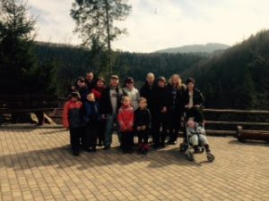
Trips to the Mountains – Travel into Winter (The ascend to Pozhezhevska Mountain, 1730 m)
Winter Fun (Sled-riding from the freestyle hill)
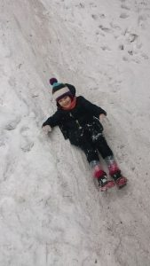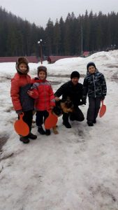
Back in the Valley is Spring! (Tour to Yaremche)
 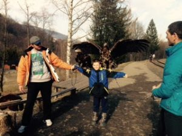
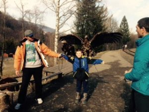On a visit to the forest dwellers (Visiting the Yaremcha zoo)
Yaremche, the ethnographic capital of the Carpathians

Local cuisine in the “Bear Mountain” restaurant
 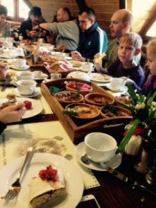 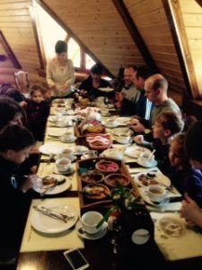
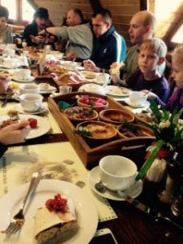 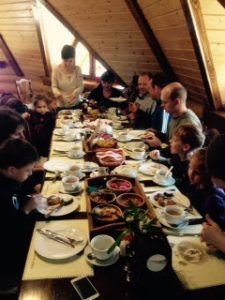But our daily meals at Zaroslyak were as good, if not even better!
 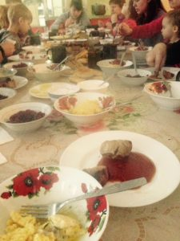
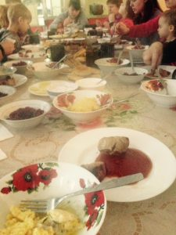
Banush (dish for real Carpathians) and kebab which we cooked (led by chefs who are masters of ethnic cuisine) were delicious!
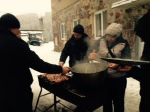 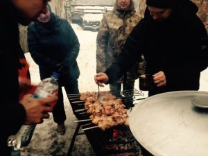
Just like this!
Mens sana in corpore sano: “A sound mind in a sound body”
Children are our future! And the future of the revolution!
But the most import part of the program and the reason why we traveled that far, is the complex psychological rehabilitation program
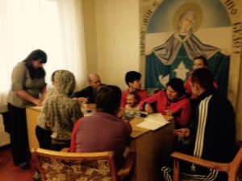 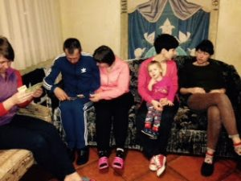
Projective techniques with symbolic cards
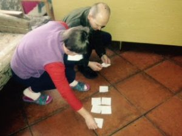
Drawing together is the path to harmony
 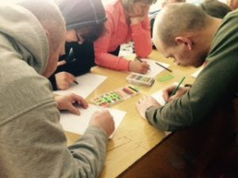
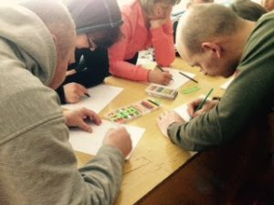
Children draw the future!

Drama is also rehabilitation

The fairy tale about Little Red Riding Hood
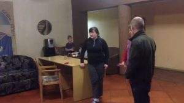
Progress Report:
Thank you!
Team UHU is grateful to Vsevolod Stebliuk for organizing this project, to Katherina Pronoza for developing psychological rehabilitation program and working with veterans and their families, and to the training center Zaroslyak staff for their hospitality. Thanks to our donors who support this important project!
Special thank you to UHU team member Yuri Yankovski for his dream and the initiative to make this dream come true!
(To donate for this project, please mention #VeteranSports in the note with your donation. Thank you!)